User Guide
This guide will provide description for the views that comes with this application and steps on how to create additional correlation searches.
MITRE ATT&CK Compliance View
Each cell containing a technique/sub-technique is colored based on the percentage of enabled correlation searches.
If there isn't any related correlation searches, the cell is left uncolored.
If there are available correlation searches either within Enterprise Security (and ESCU) or as regular/custom saved searches with matching MITRE ATT&CK techniques/sub-techniques, then cells are colored based on percentage of enabled/active ones.
Currently the ranges are set as follows:
- none: 0–30% (uncolored)
- low: 30–50% enabled
- medium: 50–70% enabled
- high: 70%+ enabled
You can mouse over to the cells that contain techniques/sub-techniques in order to view the number of available and enabled correlation rules that are specific to that technique/sub-technique. 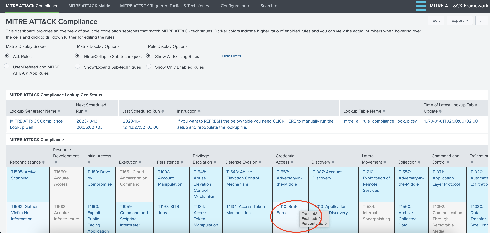
MITRE ATT&CK Matrix View
This dashboard/form has filtering options based on "Event Time Range" and "Urgency" level and it provides and overview of triggered techniques within MITRE ATT&CK Matrix colored according to the "Urgency" level of Notable Events populated index.
You can click on the triggered technique which provides the drill-down functionality. Depending on your setup you will either drill-down via Enterprise Security App Incident Review view for further analysis/investigation.
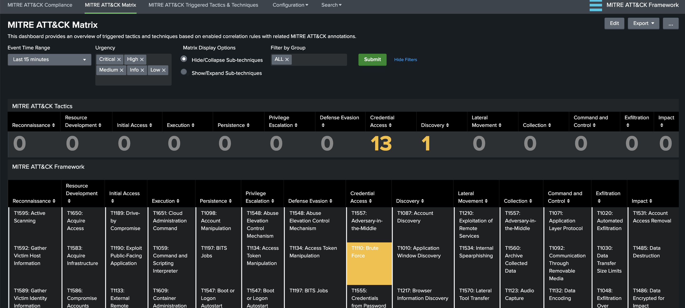
MITRE ATT&CK Triggered Tactics & Techniques View
This dashboard/form provides an overview of triggered rules based on MITRE ATT&CK Tactics and Notable assets/identities. This is an effort to provide a better visibility for a notable asset/identity journey through MITRE ATT&CK Framework. The number of triggered Notable Events according to MITRE ATT&CK techniques are aggregated by Notable Assets where notable_asset is populated by src, dest or user from related Data Models.
Currently following panels are available:
- Triggered Tactics by Notable Assets: Shows an overview of number of triggered Notable Events according to MITRE ATT&CK tactics by Notable Assets. This is provided in both Sankey Diagram and Table formats.
- Triggered Tactics by Notable User: Shows an overview of number of triggered Notable Events according to MITRE ATT&CK tactics by Notable User/Identity. This is provided in both Sankey Diagram and Table formats.
- Triggered Techniques by Tactic: There's a separate panel for each MITRE ATT&CK Framework Tactic that shows details on triggered Technique, associated correlation rule name, and count of occurrences.
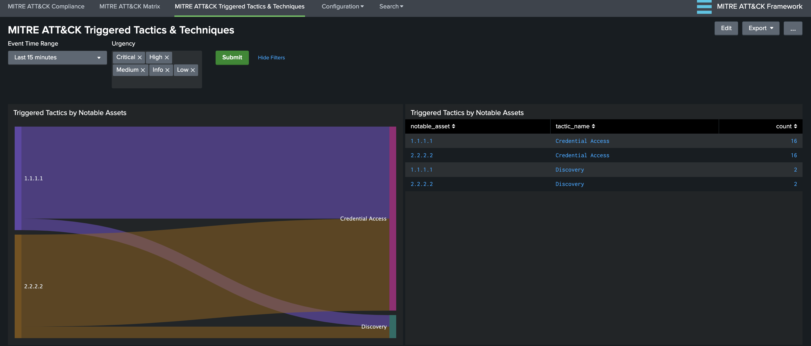
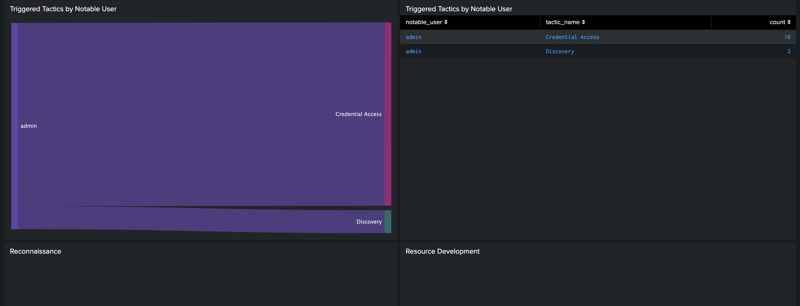
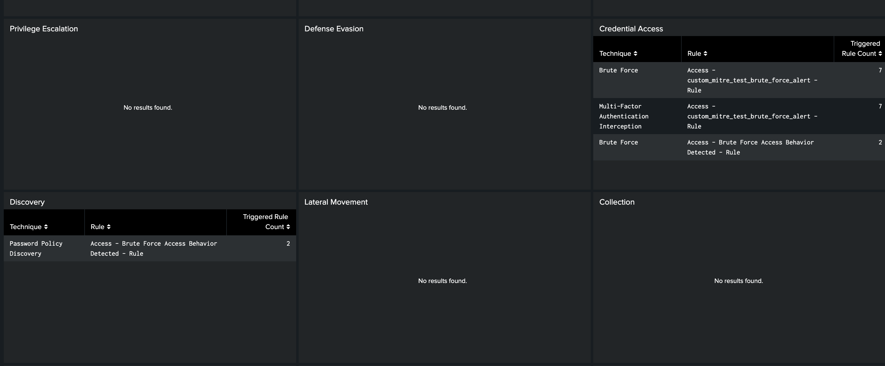
How To Match a Correlation Search with Framework
In order to view a saved/correlation search integrated with the MITRE ATT&CK Matrix, following tasks need to be completed.
- alert action (ES) - triggered view TODO:
- associate rule with technique TODO:
There are 4 ways to accomplish this task.
- Match with Analytic Story: Enable a new or existing Analytic Story to be tagged with the relevant Correlation Search
- Match with Custom Correlation Search: Enable a new or existing Custom Correlation Search with Content Management
- Match with Lookup: Edit the
mitre_user_rule_technique_lookup.csvfile. - Match with Dynamic Technique: Add
annotations.mitre_attack.mitre_technique_idmulti-value field with technique IDs.
Match with Analytic Story
The view in the application utilized Analytic Stories that are tagged with the Correlation Searches. Hence, in order to associate a Correlation Search with MITRE ATT&CK Techniques, you will need to create a new Analytic Story and add your Correlation Search with the appropriate tags.
Note: Please go to Splunk Documentation on How to create a Correlation Search
For example, if we want the Correlation Search "Brute Force Access Behavior Detected" to be associated with "Brute Force" Technique under "Credential Access" tactic, we need to perform the following steps:
- Go to "Configure --> Content --> Content Management" from Enterprise Security Application menu. Click on "Create New Content" and select "Analytic Story"
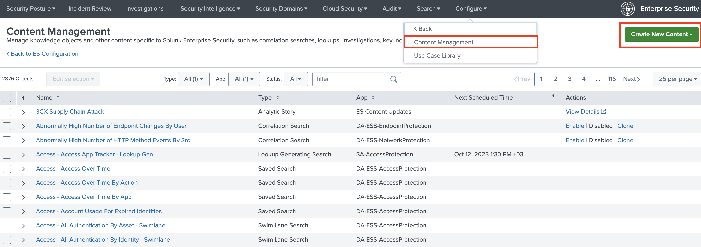 2. Enter a Name and fill other details as necessary for this analytic story. Click on "Add Search" and select "Brute Force Access Behavior Detected"
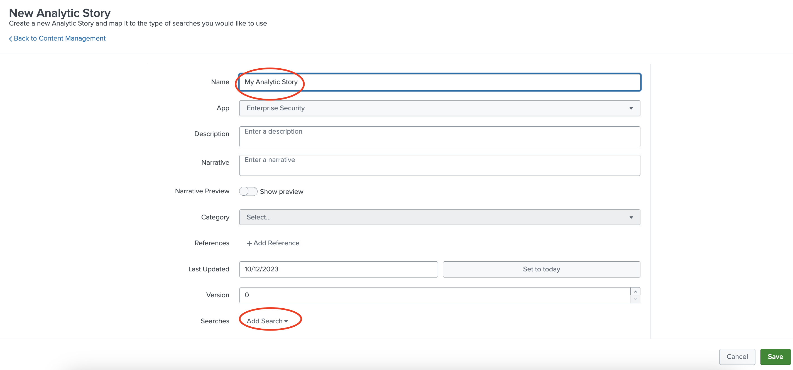
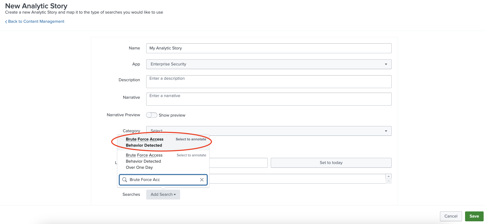
3. Enter detection for Type field and under Annotations.
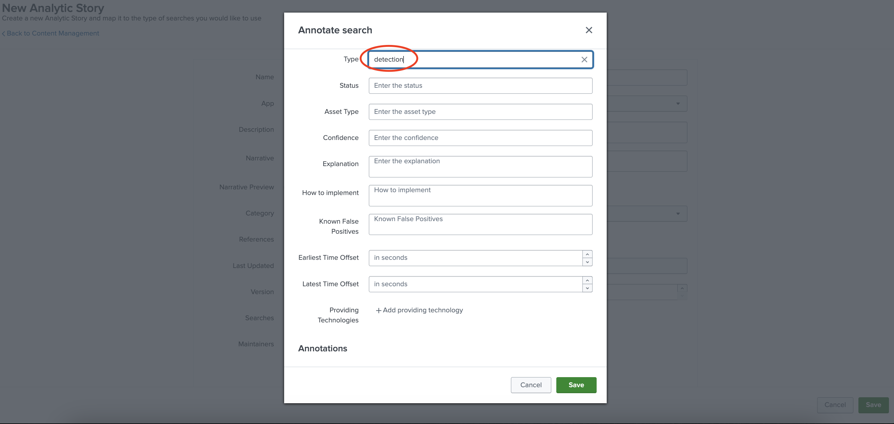
Click Framework and enter mitre_attack for Framework Name.
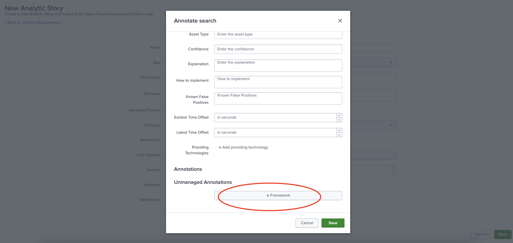
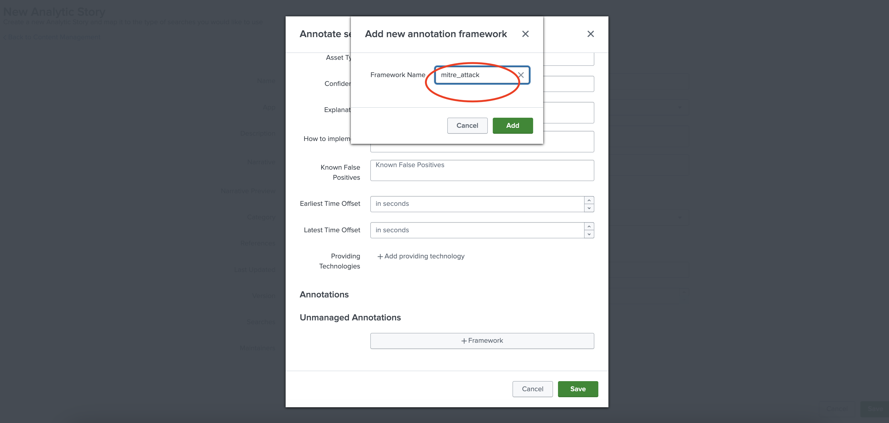
Enter Brute Force for Mappings (this should match the technique).
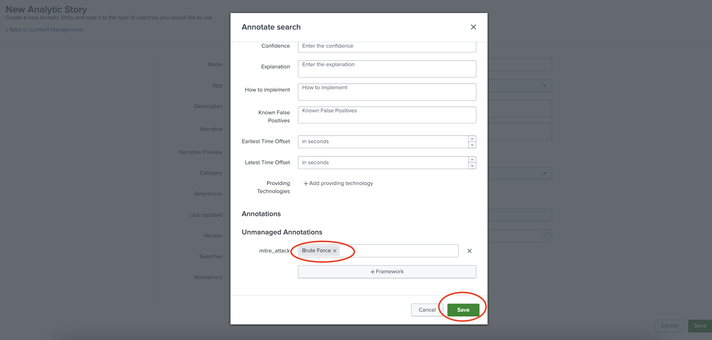 4. Click Save to save the Analytic Story with annotation and mapping with the defined correlation search. You can add many correlation searches under one analytic story with defined mappings.
Once you’re done with the Analytic Story, you may want to run Lookup File Generation manually in order to generate the overall lookup files or wait until the scheduled searches run. After lookup file generation, the correlation search will populate both the Compliance and Triggered Techniques dashboards.
Match with Custom Correlation Search
Splunk Enterprise Security 6.4.x provides MITRE ATT&CK annotation in correlation searches that map to techniques/sub-techniques. These mappings are integrated into both the Compliance and Triggered Techniques dashboards.
Note: Please go to Splunk Documentation on How to create a Correlation Search
For example, if we want the a Correlation Search to be associated with one or more techniques, we need to perform the following steps:
- Go to "Configure --> Content --> Content Management" from Enterprise Security Application menu. Click on "Create New Content" and select "Correlation Search"
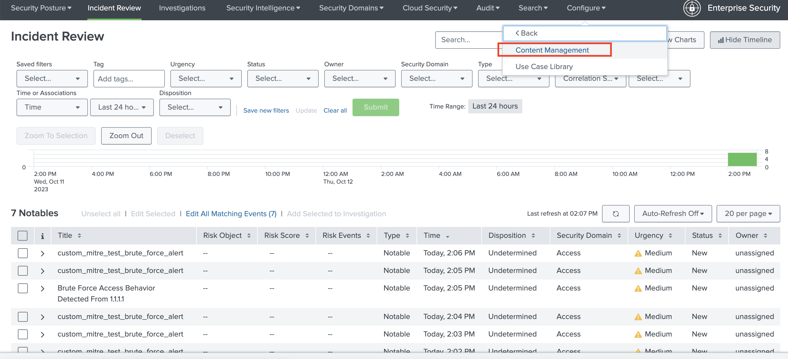 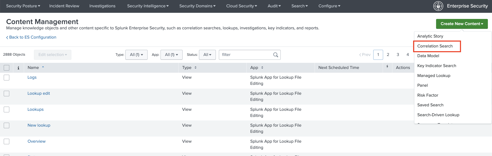 2. Enter a Name and fill other details as necessary for this correlation search. Add your custom search.
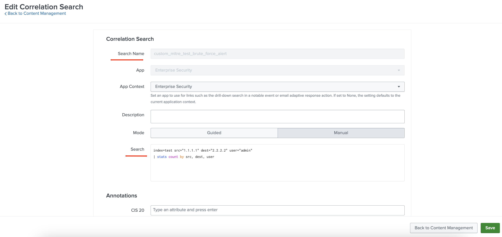 3. Enter MITRE ATT&CK techniques/sub-techniques in the Annotations section.
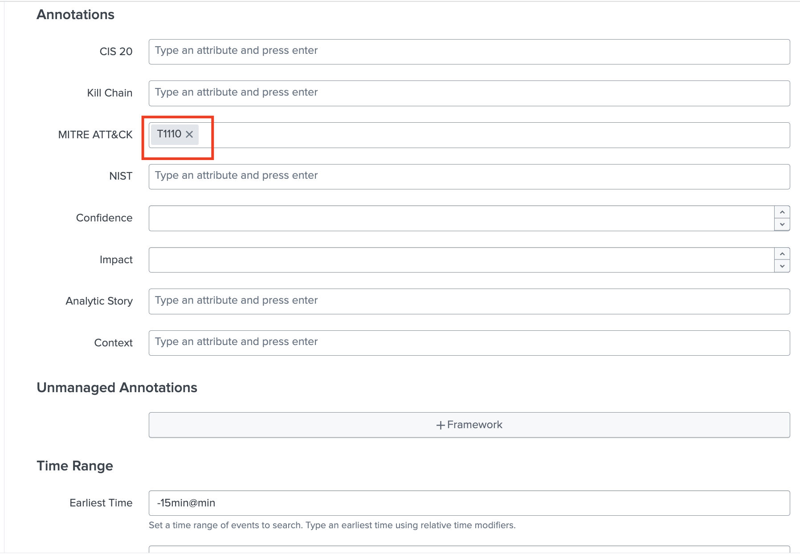
Once you’re done with the Correlation Search, you may want to run Lookup File Generation manually in order to generate the overall lookup files or wait until the scheduled searches run. After lookup file generation, the correlation search will populate both the Compliance and Triggered Techniques dashboards.
Match with Lookup
Each correlation rule is associated with 1 or more technique IDs. For a given correlation rule you if you simply want to add the technique ID(s), then you have 2 choices:
-
Utilize Map Rule to Technique views
OR
-
Edit
mitre_user_rule_technique_lookup.csvdirectly.
NOTE: The scheduled searches combine this lookup along with analytic stories and checks against existing saved/correlation searches in order to create mitre_all_rule_technique_lookup.csv, which is used within the app.
(1) Utilize Map Rule to Technique views
- Go to "Configuration --> Map Rule to Technique" from MITRE ATT&CK Framework App menu. Initially it should appear something similar to following image.
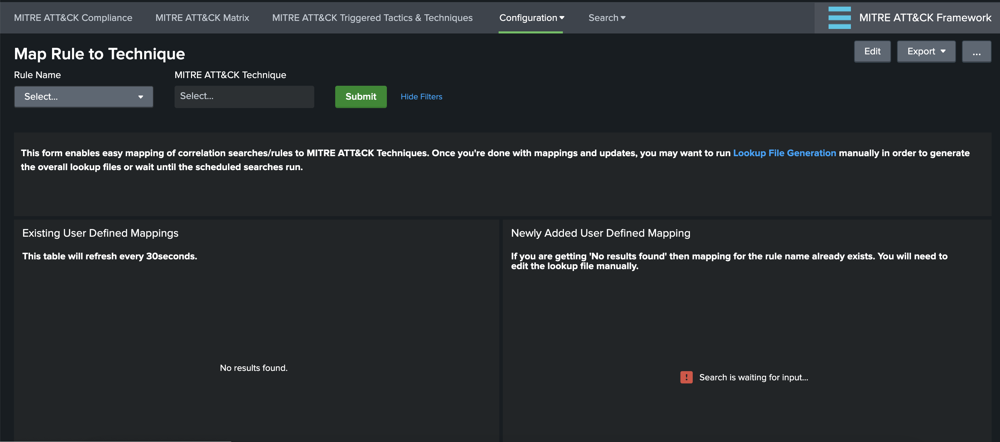
Panel Descriptions:
Existing User Defined Mappings: This panel displays the contents of user defined mappings and refreshed every 30 seconds to display updates.
Newly Added User Defined Mapping: This panel displays the newly selected rule-to-technique mapping which is added to the lookup table.
- Next, select the rule name form Rule Name dropdown menu item and associate with technique IDs from MITRE ATT&CK Technique multi-select then hit Submit. Both panels will be updated accordingly. Once you're done with mappings and updates, you may want to run Lookup File Generation manually in order to generate the overall lookup files or wait until the scheduled searches run.
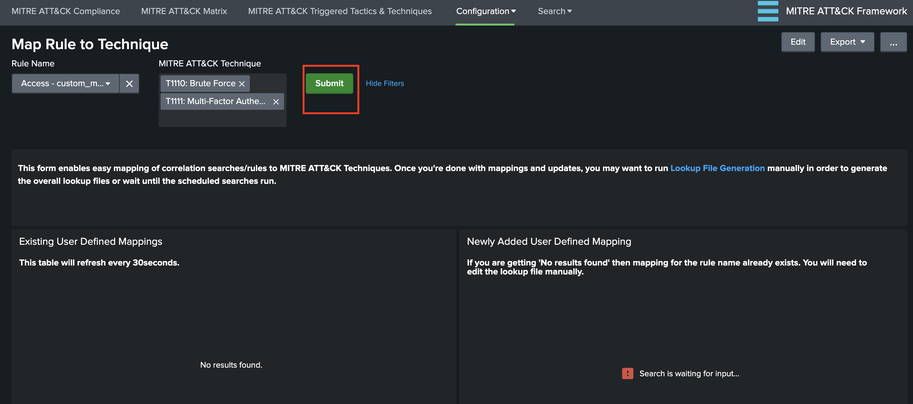
Note: Splunk is equipped with security safeguards in its SPL to alert users when attempting to execute a search in Splunk Web that includes commands deemed potentially risky. If a search command falls into this category and triggers the safeguard, a warning dialog box will pop up (Splunk version 9.0 and above), offering additional information for review. Users are given the choice to acknowledge the potential risks and proceed with running the query.
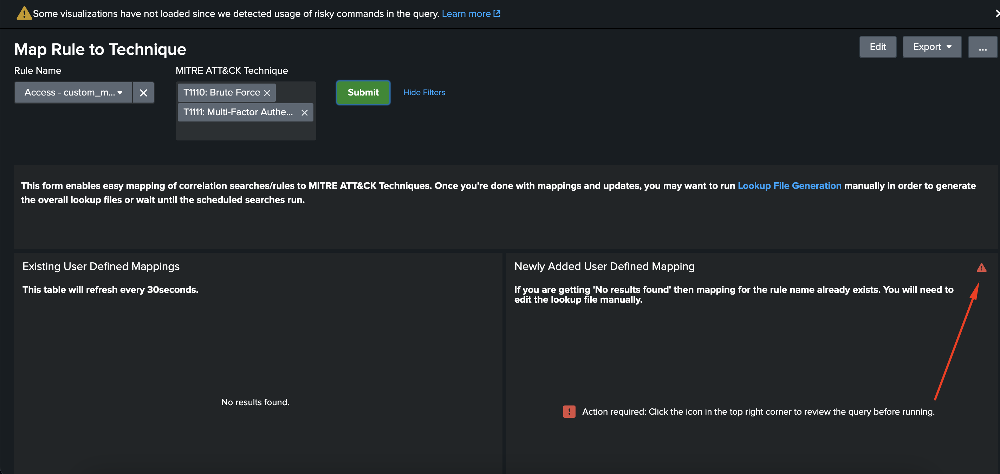
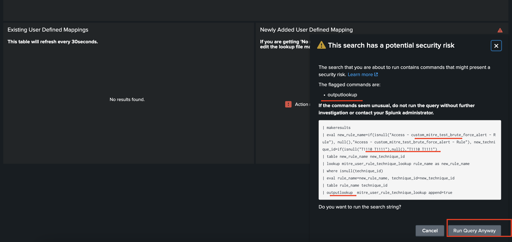
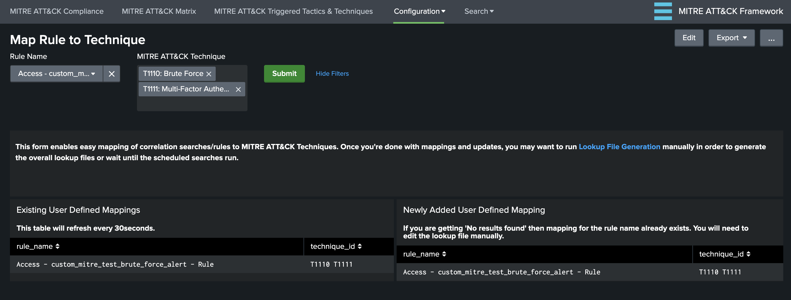
Important NOTE: If a rule name is already defined, this view does NOT add any mappings to the lookup in order to avoid duplicates. You will see No results found message and will need to edit the lookup table manually.
(2) Edit mitre_user_rule_technique_lookup.csv directly.
You can edit the csv directly or utilize Lookup Editor app from web interface.
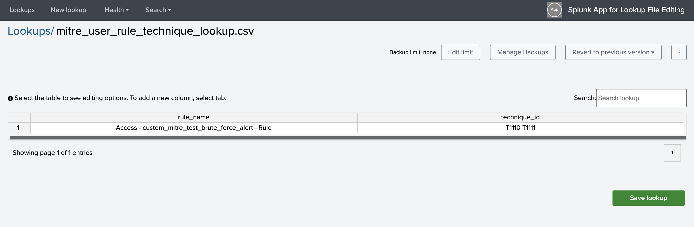
The lookup file expects 2 fields:
rule_name: The rule name as it appears insavedsearches.conf(e.g. "Access - Excessive Failed Logins - Rule")technique_id: MITRE ATT&CK Technique ID (e.g. T1078 for Valid Accounts) list separated by spaces
Match with Dynamic Technique
It's possible to dynamically match your triggered events (notable or alert) by simply adding annotations.mitre_attack.mitre_technique_id multi-value field to search results.
| tstats ...
| eval annotations.mitre_attack.mitre_technique_id="T1189"